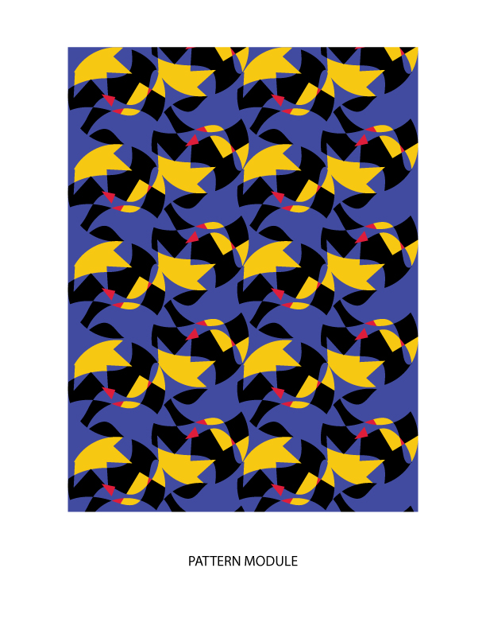
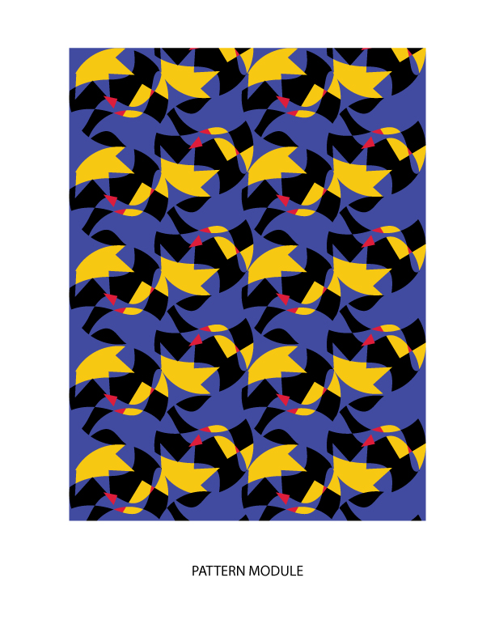
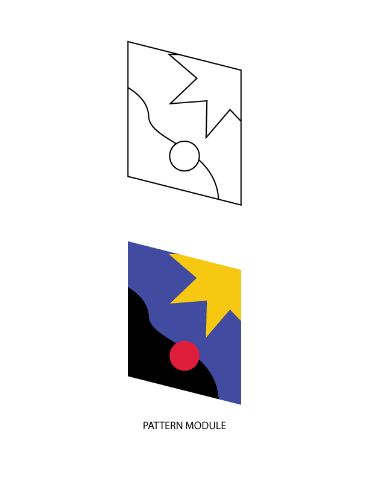
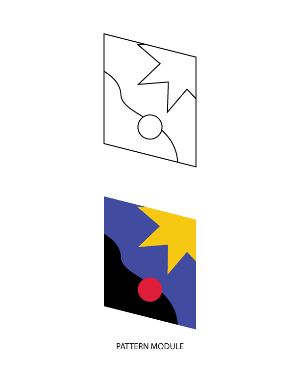
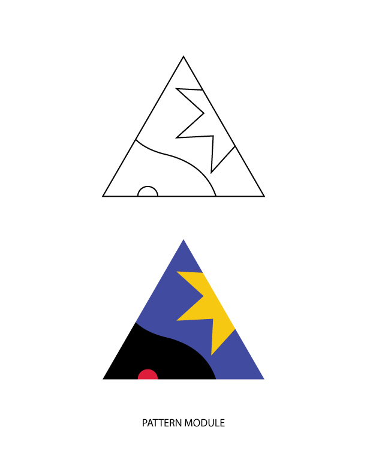
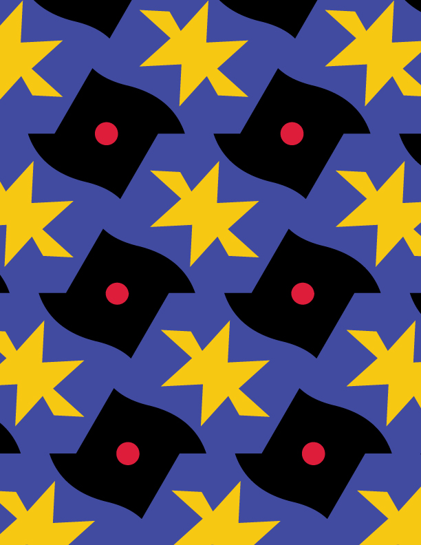
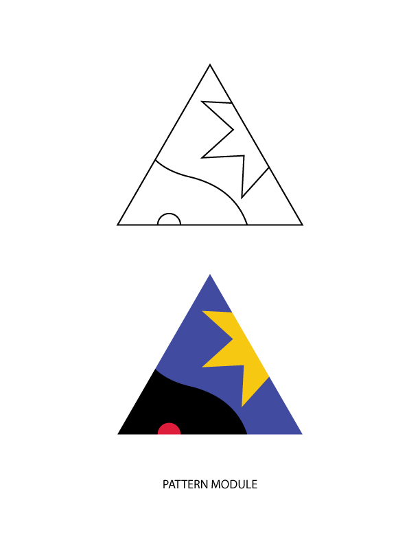
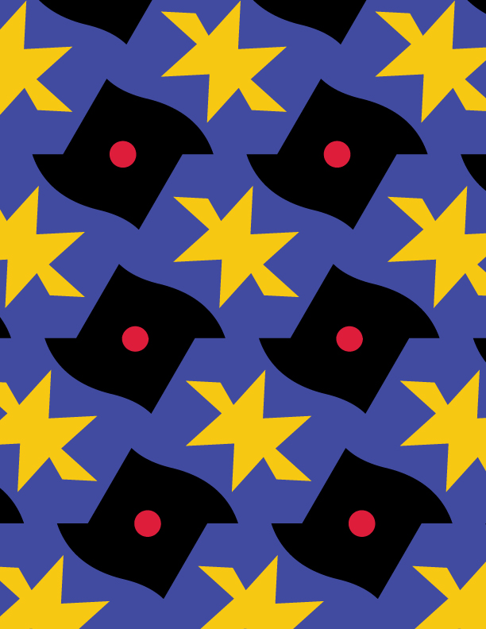

Solar Eclipse: Table Lightings
Research,Ideation,3D Modeling / Rhinoceros 3D / 2020
Product designs for Gantri
This project was carried out in a 2019 color class and the main pattern was designed by patterning Icarus by Henri Matisse, a famous French artist. With dynamic patterns and vivid colors, I designed sneakers for adults and a cushion, a pillow for children.
이 프로젝트는 2019년 컬러 클래스를 통해 진행되었으며, 프랑스의 유명 컬러 예술가 앙리 마티스의 작품 이카루스에서 영감을 받아 패턴 디자인을 완성했습니다. 역동적인 패턴과 선명한 색감을 바탕으로, 어른을 위한 운동화와 어린이를 위한 베개 및 쿠션을 디자인하였습니다.

Henri Matisse's Icarus is predominantly made up of shades of blue, which evoke the feeling of a night sky. The
blue gives off a darker rather than lighter tone, and the addition of black throughout the piece deepens this
sense of darkness. In contrast, small amounts of yellow shine brightly in the darkness, with the vivid yellow
creating a strong contrast against the deep blues and blacks, giving the work a dynamic energy. Though the use of
red is minimal, it contrasts with the cool blue, offering a warm sensation. This small, bright, and warm color
creates a subtle sparkle against the dark background, adding life and emotional depth to the piece. On a larger
scale, this work conveys a sense of hope.
Drawing from this color analysis, when I created the pattern, I aimed to place colors in various positions to
evoke a natural flow. I made sure that each color connected seamlessly, creating an organic, visually harmonious
effect.
앙리 마티스의 이카루스는 대체로 파란색을 중심으로 구성되어 있습니다. 이 파란색은 밤하늘을 연상시키며, 밝기보다는
어두운 느낌을 주는데, 특히 사진 속에 검은색이 더해져 전체적으로 더 깊고 묵직한 분위기를 형성합니다. 그 속에서
소량의 노란색이 어둠 속에서 밝게 빛나고, 그 선명한 노란색이 짙은 파란색과 검은색과 강한 대비를 이루며 역동성을
자아냅니다. 붉은색은 아주 적게 사용되지만, 차가운 파란색과 대조를 이루며 따뜻한 느낌을 주고, 작은 크기에도
불구하고 그 자체로 따뜻한 존재감을 발산합니다. 이 작은, 밝고 따뜻한 색조는 어두운 배경 속에서 반짝이며, 그림에
생동감과 감동을 불어넣습니다. 전체적으로, 이 작품은 희망과 같은 감정을 불러일으킵니다.
이러한 컬러 표현을 바탕으로 패턴을 만들 때, 자연스러운 흐름을 주기 위해 다양한 위치에 색을 배치하려고 노력했고,
각 색이 자연스럽게 연결되면서 시각적으로 유기적인 느낌을 주도록 신경을 썼습니다.
.jpg) 

Based on the color proportions and the shapes in Icarus, I began creating a module. Initially, I started developing the module design by utilizing the geometric shapes and curves found in the original Icarus. However, when I repeated the module, I realized it was difficult to capture the original simple and unique feeling. After analyzing the pattern, I found that many sides and lines were repeated within a single module, resulting in excessive detail.
이카루스 작품의 색 비율과 형태를 바탕으로 모듈을 만들기 시작했습니다. 처음에는 원본 이카루스에서 발견된 기하학적 형태와 곡선을 활용하여 모듈 디자인을 발전시켜 나갔습니다. 그러나 모듈을 반복하면서 본래의 심플하고 유니크한 느낌을 재현하기 어렵다는 것을 깨닫게 되었습니다. 그 후 패턴을 분석해 보니, 하나의 모듈 안에 여러 면과 선이 반복되면서 지나치게 세부적인 요소가 많아졌음을 알 수 있었습니다.
 

 



Based on the issues from the first challenge, in the second attempt, I succeeded to some extent in simplifying
the pattern by reducing the number of faces within the module. However, when I repeated the module, I discovered
that the balance of the color proportions was off.
Upon analyzing the color ratios, I found that the proportion of red in Icarus was less than 5% of the entire
artwork, and as the red was repeated within the module, the proportion of red in the overall pattern increased. I
had to be careful of this point during the process of refining the pattern.
첫 번째 챌린지에서의 문제를 바탕으로, 두 번째 시도에서는 모듈 안의 면 수를 줄여 패턴을 단순화하는 데 어느 정도
성공했습니다. 그러나 모듈을 반복했을 때 색채 비율의 균형이 어긋나는 문제를 발견했습니다.
색채 비율을 분석한 결과, 이카루스에서 빨간색의 비율은 전체 그림의 5%에도 미치지 않았고, 모듈 내에서 빨간색이
반복되면서 패턴 전체에서 빨간색의 비율이 증가했습니다. 패턴을 수정하는 과정에서 이 점을 주의해야 했습니다.
Based on the issues mentioned above, after several attempts, I was able to create a pattern that evokes the
essence of Icarus. During this process, I focused on adjusting the color proportions within the module, with
particular attention given to maintaining the appropriate balance of red.
To emphasize the contrast between red and black, which stands out in the original Icarus, I significantly reduced
the proportion of red throughout the pattern.
위의 문제점을 바탕으로 여러 번의 시도를 거쳐, 현재와 같은 이카루스를 연상시키는 패턴을 만들 수 있었습니다. 그
과정에서 모듈 안의 색채 비율을 조정하려고 노력했으며, 특히 빨간색의 비율을 적절하게 유지하는 데 중점을
두었습니다.
반복되는 모듈 패턴에서 이카루스 그림에서 두드러지는 빨간색과 검정의 대비를 더 강조하기 위해, 전체적으로 빨간색의
비율을 대폭 감소시켰습니다.


After creating the pattern, I thought it would be interesting to apply its dynamic quality to sneaker design. When applying the pattern to the sneakers, I made an effort to maintain the overall color proportions, while also preserving the contrast between the three main colors found in Icarus.
패턴을 만든 후, 그 역동성을 운동화 디자인에 적용하면 좋겠다는 생각이 들었습니다. 운동화에 패턴을 적용할 때, 전체적인 색 비율을 유지하려고 노력했으며, 이카루스에서 볼 수 있는 주요 3가지 색상의 대조를 그대로 반영하려 했습니다.
Addtionally, I thought that the simple and primary colored pattern could work well for children's bedding designs, So I applied the pattern to a pillow.
또한, 단순하고 원색적인 태턴이 아이들 침구류 디자인에 사용되도 좋다고 생각되어, 배게에 패턴을 적용시켜 보았습니다.

Product designs for Gantri
Design for disaster and resilience